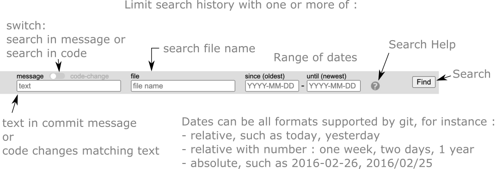

Searching history
The number of visible previous commits can be filtered in a dialog that opens by clicking the icon.
The dialog allows filtering using a combination of the fields for :
- file name (part of, or whole name)
- text in commit message
- changed code lines in which search term exists (see below)
- date range

After pressing the [Find] button, the lower status bar shows something like (1 of 2), where the second number shows how
many commits that were found, and the first number which of these commits is currently displayed. This filtered history
can be browsed by the arrow buttons
(
 ),
exactly as described for the non-filtered history. The "abbreviated hash" code of the commit is also shown at the bottom.
),
exactly as described for the non-filtered history. The "abbreviated hash" code of the commit is also shown at the bottom.
The format for dates follow git notation, and can be in many convenient formats as indicated in above figure text. Git uses a library called "approxidate", which is very flexible, but the documentation is sparse.
Code search finds commits, by looking for lines that has changed and that contain the search text. Thus the search text does not have to be changed, but a modified line must contain the word searched for.
The filter is disabled by clicking the icon again.